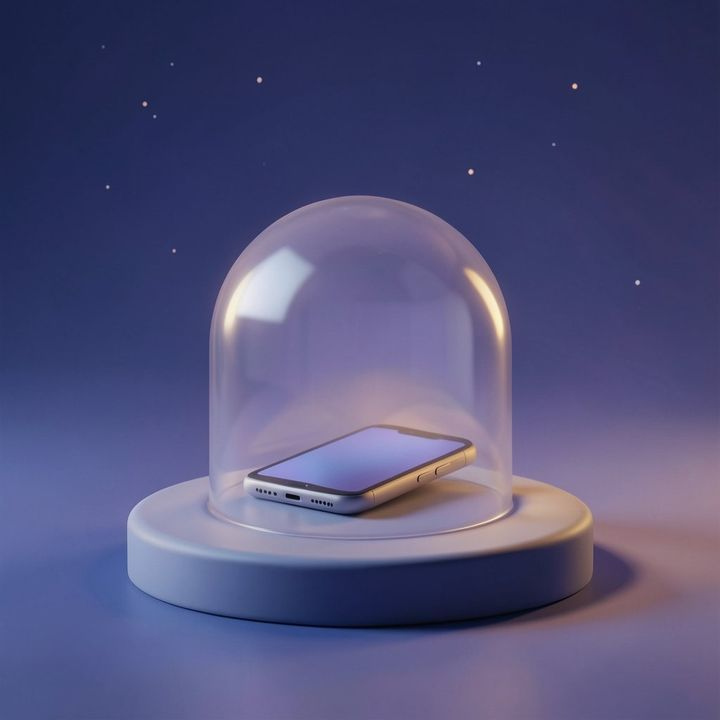

Grenzen
Sperr, was dich zieht
Sperrlisten aus Apps, Kategorien und Websites über Apples Bildschirmzeit, jede mit eigenem Zeitfenster, eigener Zahl an Fragen und eigener Freigabedauer.
- Vorlagen für Social Media, ruhigen Morgen, Deep Work und Nacht
- Tageslimits, steigende Hürde, kurze Wartezeit
- Lockdown: alles aus bis zum nächsten Morgen